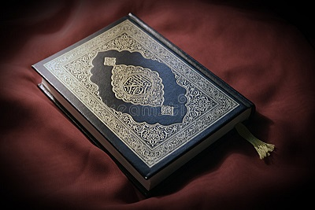

<ion-content [fullscreen]="true">
  <div class="container">
    <div class="flex-item">
      <div class="jumbotron jumbotronBlue mat-elevation-z8 TextWhite">
        <div class="flex-item">
          
          <br />
          
          <ion-row class="ToolbarHeading" style="color: white">
            أدعية مختارة من القران الكريم وصحيح السنة
            <br />
            Selected Supplications(Duas) From The Holy Quran And Authentic
            Sunnah
          </ion-row>
        </div>
      </div>
    </div>
  </div>
</ion-content>
